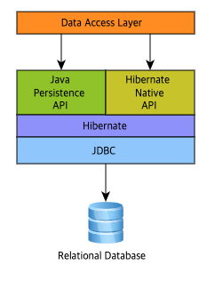
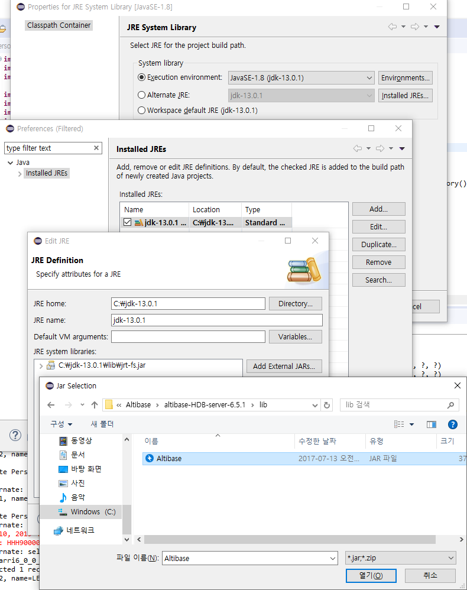
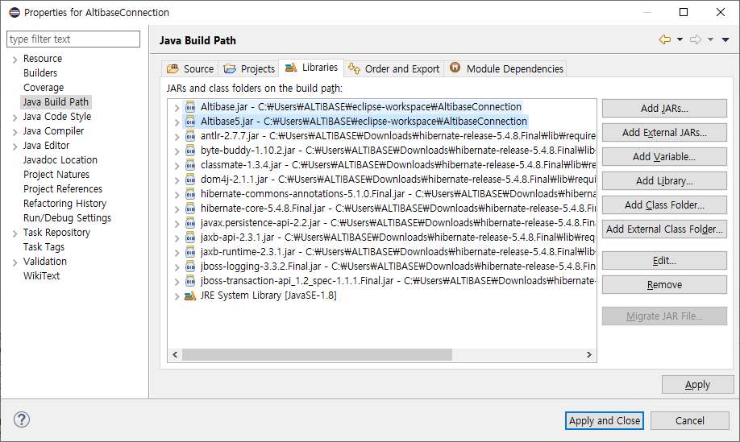
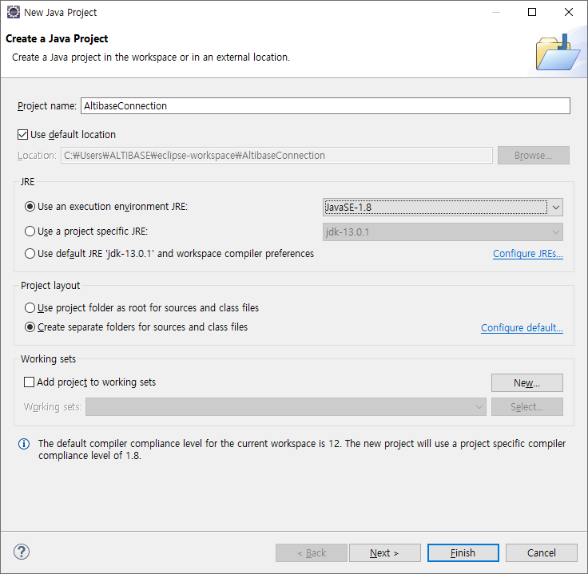
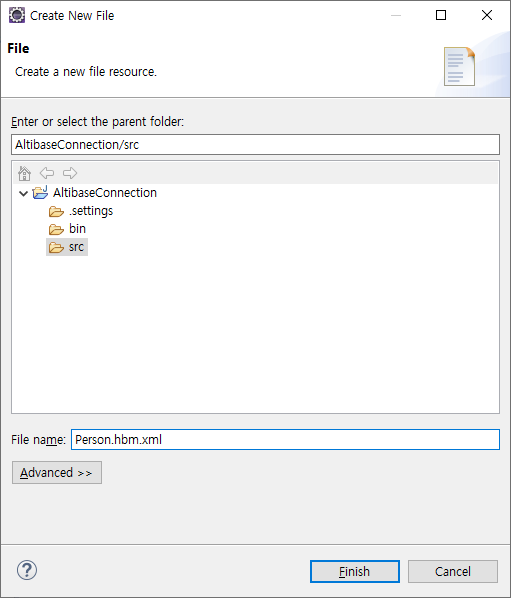
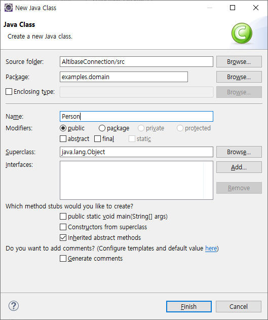
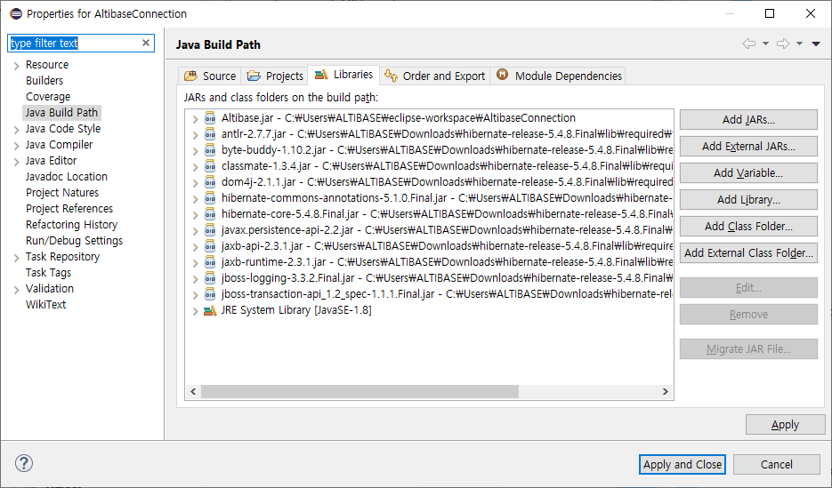
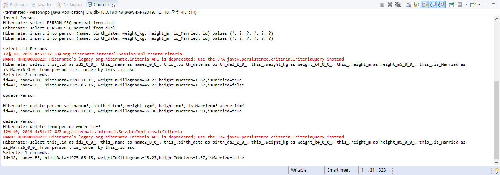

Hibernate
Overview
This chapter describes the concept and features of Hibernate, and how to download and use Hibernate.
What is Hibernate?
Hibernate is an ORM (Object Relational Mapping) framework that enables programmers to use DBMS more conveniently. Hibernate maps the relationship between DBMS tables and Java objects to help persistence logic processing. That is, using Hibernate, it is possible to execute DML for CRUD (INSERT, SELECT, UPDATE, DELETE) to the DBMS by mapping the DBMS table and Java Persistence Object (JavaBean).
The following figure illustrates the architecture of Hibernate.

For more detailed information about the architecture of Hibernate, please refer to the site below.
Downloading Hibernate
In order to use Hibernate, the jar file related to Hibernate is required, and this jar file can be downloaded from http://hibernate.org/orm/releases/5.4. When the downloaded file is unzipped, there are several directories. In particular, there are various jar files in the sub-directory of the lib directory, and use these files to integrate with Hibernate.
For this document, Hibernate 5.4.8 version was used and the directory name where this version was extracted is 'hibernate-release-5.4.8.Final'.
Sample Creation using Hibernate
Hibernate-configuration XML file and hibernate-mapping XML file must be created to integrate with DBMS using Hibernate.
- hibernate-configuration XML: Definition file for connection information to interwork with DBMS and for dialects to use unique features.
- hibernate-mapping XML: Definition file for mapping between Java Persistence Object and DBMS Table.
This chapter describes how to create a hibernate-configuration XML file, hibernate-mapping XML file, and how to execute DML by using these files in an application.
For details on how to create the sample program, please refer to the appendix.
Creating hibernate-mapping file
The hibernate-mapping XML file is a configuration file containing between DBMS table and Java Object.
The following is an example of creating a hibernate-mapping XML file that defines the mapping between person table and Person class.
<?xml version="1.0" encoding="euc-kr" ?>
<!DOCTYPE hibernate-mapping PUBLIC
"-//Hibernate/Hibernate Mapping DTD//EN"
"http://hibernate.sourceforge.net/hibernate-mapping-3.0.dtd">
<hibernate-mapping>
<!-- person table and Person class mapping -->
<class name="examples.domain.Person" table="person">
<id name="id" column="id" type="int">
<generator class="sequence">
<param name="sequence_name">PERSON_SEQ</param>
</generator>
</id>
<property name="name" column="name" type="string"/>
<property name="birthDate" column="birth_date" type="date"/>
<property name="weightInKilograms" column="weight_kg" type="double"/>
<property name="heightInMeters" column="height_m" type="double"/>
<property name="isMarried" column="is_Married" type="boolean"/>
</class>
</hibernate-mapping>
- Use the <class> tag to specify the Java class, DBMS table, and <property> tag mappings of the table's columns and the corresponding Java variables.
- Depending on the Hibernate version, the sequence object must define the param name as sequence_name or sequence.
For more information about each tag, please refer to http://www.hibernate.org.
Creating hibernate-configuration file
The hibernate-configure file is a file that sets up a variety of connection information for DBMS connections, a dialect class for using unique functions, and a hibernate-mapping file.
The following is an example of a hibernate-configuration file.
<?xml version='1.0' encoding="euc-kr"?>
<!DOCTYPE hibernate-configuration PUBLIC
"-//Hibernate/Hibernate Configuration DTD 3.0//EN"
"http://hibernate.sourceforge.net/hibernate-configuration-3.0.dtd">
<hibernate-configuration>
<session-factory>
<!-- DBMS connection information -->
<property name="connection.driver_class">
Altibase.jdbc.driver.AltibaseDriver</property>
<property name="connection.url">
jdbc:Altibase://192.168.1.35:20300/mydb</property>
<property name="connection.username">sys</property>
<property name="connection.password">manager</property>
<property name="connection.pool_size">1</property>
<property name="dialect"> <!-- Specify dialect class name suitable for DBMS -->
org.hibernate.dialect.AltibaseDialect</property>
<property name="current_session_context_class">thread</property>
<property name="show_sql">true</property>
<mapping resource="Person.hbm.xml"/>
</session-factory>
</hibernate-configuration>
- <session-factory> tag
This sets the DBMS connection information and specifies the dialect class name appropriate for the DBMS to connect tot he dialect property - <mapping resource> tag
This specifies hibernate-mapping files.
For more information about each tag, please refer to http://www.hibernate.org.
Writing Application
If the Session object is used in the application, DML can be executed on the DBMS table in conjunction with the mapping object, and the method is as follows.
- Retrieve the SessionFactory object with the hibernate-configuration file.
- Retrieve the Session object with the SessionFactory object.
- Call the method corresponding to each DML of the Session object.
The following is an application to insert, select, update, get, and delete the person table of the DBMS.
……
SessionFactory sessionFactory = new Configuration().configure("Hibernate.cfg.xml").buildSessionFactory();
Session session = sessionFactory.openSession();
Transaction tx = session.beginTransaction();
//insert Person
Person newPerson1 = new Person();
……
session.save(newPerson1);
tx.commit();
//select all Person
Criteria crit = session.createCriteria(Person.class);
crit.addOrder(Order.asc("id"));
List<Person> list = crit.list();
……
//update Person
tx = session.beginTransaction();
newPerson1.setHeightInMeters(1.93);
newPerson1.setWeightInKilograms(86.36);
session.update(newPerson1);
tx.commit();
//get Person
Person person = (Person) session.get(Person.class,newPerson1.getId());
System.out.println(person);
//delete Person
tx = session.beginTransaction();
session.delete(session.get(Person.class, newPerson1.getId()));
tx.commit();
……
- First, read the hibernate-configuration file to retrieve the SessionFactory object.
SessionFactory sessionFactory = new Configuration().configure("Hibernate.cfg.xml").buildSessionFactory() - Then, retrieve Session object with the SessionFactory object.
Session session = sessionFactory.openSession(); - Then, each method of the Session class corresponding to each DML is called.
session.save()
session.update()
session.delete()
session.get()
session.createCriteria()
For more information about each tag, please refer to http://www.hibernate.org.
Integrating Altibase with Hibernate
To integrate Altibase with Hibernate, the Altibase JDBC driver must be configured and the dialect class for Altibase in the hibernate-configuration file must be specified.
This chapter describes how to include the AltibaseDialect class specific to Altibase in the Hibernate jar file, how to get the Altibase JDBC driver, how to configure the JDBC driver, and how to configure dialect in the hibernate-configuration file. In addition, this chapter also describes how to use the FailOver function and how to integrate several versions of Altibase.
Adding AltibaseDialect class to Hibernate jar file
DBMS vendors can provide non-standard SQL to its characteristics.
Hibernate provides a dialect class to execute non-standard SQL statements, but a dialect class for Altibase is not provided by default.
Altibase specific dialect class must be used in the deployed Hibernate jar file to use various non-standard SQL (limit clause, sequence syntax, etc.) provided by Altibase.
The dialect class for Altibase is provided with the following URL.
https://github.com/ALTIBASE/hibernate-orm/blob/master/ALTIBASE_DIALECT_PORTING.md
To download the AltibaseDialect class and related files for the Hibernate version and include them in the Hibernate jar file is as follows.
Unzip the Hibernate jar file.
$mv hibernate-core-x.x.x.Final.jar to-the-java-file-directory $cd to-the-java-file-directory $jar xvf hibernate-core-x.x.x.Final.jar
Deploy and compile the AltibaseDialect.java, AltibaseLimitHandler.java, and SequenceInformationExtractorAltibaseDatabaseImpl.java files that are distributed in the directory where you unzipped the Hibernate jar.
$mv Altibase*.java to-the-java-file-directory $cd to-the-java-file-directory $javac -d . -cp . AltibaseLimitHandler.java $javac -d . -cp . AltibaseDialect.java $javac -d . -cp . SequenceInformationExtractorAltibaseDatabaseImpl.java
Create a Hibernate jar containing the AltibaseDialect class.
$jar -cvfm hibernate-core-x.x.x.Final.jar META-INF/MANIFEST.MF .
- Use the hibernate-core-x.x.x.Final.jar file created above as a Hibernate jar file.
How to get the Altibase JDBC Driver
The JDBC driver provided by Altibase is the Altibase.jar file. This file is located in the $ALTIBASE_HOME/lib directory on the server where Altibase is installed.
Starting from the Altibase version 5, two files are provided in the $ALTIBASE_HOME/lib directory, Altibase.jar file and jar file with major version specified such as Altibase5.jar.
The Altibase.jar is a general JDBC driver file, and the Altibase5.jar is the JDBC driver file used when integrating Altibase version 5 and other versions together. Therefore, the Altibase.jar file is used when linking with one Altibase server or multiple Altibases of the same version.
Before using the Altibase JDBC driver, the user must check the compatibility between the Altibase server and the Altibase JDBC driver. The user can check the compatibility by comparing the communication protocol version of the Altibase server with the communication protocol (CMP) version of the Altibase JDBC driver.
How to check the Altibase JDBC driver version
$ java –jar Altibase.jar JDBC Driver Info : Altibase Ver = 5.3.3.13 for JavaVM v1.4, CMP:5.6.1, $Revision: 14502 $ Jan13 2010 14:35:28
How to check the communication protocol version of the Altibase server
$ altibase -v version 5.3.3.13 XEON_LINUX_redhat_Enterprise_AS4-64bit-5.3.3.13-release-GCC3.4.6 (xeonredhat-linux-gnu) Jan 13 2010 14:35:30, binary db version 5.4.1, meta version 5.6.1, cm protocol version 5.6.1, replication protocol version 5.4.1
How to configure the JDBC driver
To use the Altibase JDBC driver, add the Altibase.jar file to the classpath or place it in the appropriate directory of the web server.
If the user is developing using the Eclipse, the user can add the Altibase JDBC to the project as follows.
Project – JRE System Library [J2SE-1.5]-Properties – Installed JREs – Click jre among the items – Edit – Add External JARs to add Altibase.jar.
Setting dialect in hibernate-configuration file to integrate with Altibase
Use the <property> tag of <sessionFactory> in hibernate-configuration file to specify connection information and dialect class to integrate with Altibase.
At this time, each defined property is as follows.
| Property | Description |
|---|---|
| connection.driver_class | ALTIBASE JDBC driver class Name |
| connection.url | Connection string information for connection with ALTIBASE |
| connection.username | Database account username |
| connection.password | Database password |
| dialect | AltibaseDialect class name |
The following is an example of configuring Altibase connection information in the hibernate-configuration file.
<hibernate-configuration>
<session-factory>
<!-- Altibase connection configuration -->
<property name="connection.driver_class">
Altibase.jdbc.driver.AltibaseDriver</property>
<property name="connection.url">
jdbc:Altibase://192.168.1.35:20300/mydb</property>
<property name="connection.username">sys</property>
<property name="connection.password">manager</property>
<!-- Specify the AltibaseDialect class in the dialect property -->
<property name="dialect">
org.hibernate.dialect.AltibaseDialect</property>
<property name="connection.pool_size">1</property>
<property name="current_session_context_class">thread</property>
<property name="show_sql">true</property>
<!-- hibernate-mapping file Person.hbm.xml file configuration-->
<mapping resource="Person.hbm.xml"/>
</session-factory>
</hibernate-configuration>
- Set 4 properties for connecting to the Altibase server.
connection.driver_class
connection.url
connection.username
connection.password - Specify the Altibase Dialect class in the dialect property.
- Configure Person.hbm.xml file, hibernate-mapping file.
To run the AltibaseConnection project above, Hibernate related jar file and Altibase.jar file are required.
Connection using FailOver
FailOver is supported as of ALTIBASE 5.3.3. To use the FailOver function, set the FailOver related property in the connection.url property of the hibernate-configuration file.
The following is an example of connecting to the Altibase server using FailOver.
… <property name="connection.url"> jdbc:Altibase://192.168.1.35:20300/mydb?AlternateServers=(127.0.0.1:20300)&ConnectionRetryCount=1&ConnectionRetryDelay=1&SessionFailOver=on&LoadBalance=off </property>
The FailOver related properties defined in the connection url part specified in the above file are as follows.
| Property | Description |
|---|---|
| AlternateServer | This indicates the available servers to be connected when a failure occurs (IP Address1:Port1, IP Address2:Port2,...). |
| ConnectionRetryCount | This indicates the number of retries of connection attempts when an available server connection fails. |
| ConnectionRetryDelay | This indicates the time of delay (in seconds) before attempting to connect again when an available server connection fails. |
| LoadBalance | If set to on, the random selection is made including the default server and available servers when the first connection is attempted. If set to off, it connects to the default server when the initial connection is attempted. If the connection to the default server fails, it connects to the AlternateServer. |
| SessionFailOver | Option to use STF(Service Time Fail-Over). on: STF, off: CTF The CTF(Connection Time Fail-Over) detects the failure at the time of DBMS connection and retries the connection to the DBMS of another available node instead of the DBMS where the failure occurred. The STF(Service Time Fail-Over) detects the failure during DBMS service and access DBMS of another available node again to restore the properties of the session so that the business application logic can continue to be executed. Since the STF performs Fail-Over only for DBMS connection, the failed transaction must be reprocessed by the user. |
To execute the FailoverSample project above, the same jar files as the 'Setting dialect in hibernate-configuration file to integrate with Altibase' section are required.
Simultaneous connect to 2 Altibase versions
Starting with the Altibase version 5, the JDBC driver for Altibase version 5 is provided so that two or more versions can be connected simultaneously in one application. With this driver, the user can access two versions of Altibase between Altibase V5-Altibase V7, Altibase V5-Altibase V6.
In order to distinguish it from the existing Altibase.jar, Altibase5.jar dedicated to Altibase version 5 is required, and each version is provided in the form of specifying the major version in a file. Also, the JDBC driver class name specified in the connection.driver_class property of the hibernate-configuration file must be specified as Altibase5.jdbc.driver.AltibaseDriver for Altibase version 5 instead of the existing Altibase.jdbc.driver.AltibaseDriver.
In order to integrate with other versions of Altibase in Hibernate, create hibernate-configuration files for each version separately and read each hibernate-configuration file from the application.
Please note that, in this case, the application must first load Altibase5.jdbc.driver.AltibaseDriver and then Altibase.jdbc.driver.AltibaseDriver.
The following are examples of loading the drivers of two versions of Altibase using Altibase.jar and Altibase5.jar files.
Ex) Hibernate.Altibase5.cfg.xml file of MultiVersionConnection
… <property name="connection.driver_class">Altibase5.jdbc.driver.AltibaseDriver </property> …
Ex) Hibernate.Altibase7.cfg.xml file of MultiVersionConnection
… <property name="connection.driver_class">Altibase.jdbc.driver.AltibaseDriver </property> …
Ex) PersonApp.java file of MultiVersionConnection
…
SessionFactory sessionFactory1 =
new Configuration().configure("Hibernate.Altibase5.cfg.xml").buildSessionFactory();
SessionFactory sessionFactory2 =
new Configuration().configure("Hibernate.Altibase7.cfg.xml").buildSessionFactory();
Session session1 = sessionFactory1.openSession();
Session session2 = sessionFactory2.openSession();
…
In the example of PersonApp.java above, you can see that Altibase5.jdbc.driver.AltibaseDriver is used as connection.driver_driver_class to load Altibase5.jdbc.driver.AltibaseDriver before Altibase.jdbc.driver.AltibaseDriver.
Please note that the driver for Altibase 5 must be loaded first.

Hibernate, Spring, Altibase Integration
To integrate with the Altibase server, the user can connect by specifying connection information and dialect in the configuration of Hibernate, or by specifying a dataSource in Spring.
This chapter describes how to integrate with the Altibase server using these two methods.
When setting dataSource in Spring
The following process is required to use Hibernate and Spring together.
- Create dataSource for DBMS integration in Spring's applicationContext.xml file. For more detailed information on setting the dataSource, please refer to the "ALTIBASE_Spring_Linking Guide" document.
- Specify Hibernate's sessionFactory bean in applicationContext.xml file. At this time, specify the dataSource set in No. 1 in <property name="dataSource">, hibernate-mapping files in <property name-"mapping-resource>, and <property name="hibernate Properties"> defines properties related to Hibernate.
- In the applicationContext.xml file, set each DAO bean to refer to the SessionFactory bean.
- The session object is obtained with the SessionFactory object set in the DAO class, and methods corresponding to each DML are called.
The following is an example of specifying dataSource and sessionFactory bean in applicationContext.xml file.
…
<!-- Set dataSource to connect to Altibase server. -->
<bean id="dataSource"
class="org.springframework.jdbc.datasource.DriverManagerDataSource">
<property name="driverClassName" value="Altibase.jdbc.driver.AltibaseDriver"/>
<property name="url" value="jdbc:Altibase://192.168.1.35:20300/mydb"/>
<property name="username" value="sys"/>
<property name="password" value="manager" />
</bean>
<!-- Specify Hibernate's sessionFactory bean. -->
<bean id="sessionFactory"
class="org.springframework.orm.hibernate3.LocalSessionFactoryBean">
<property name="dataSource" ref="dataSource"/> <!-- Enter the dataSource set above. -->
<property name="mappingResources">
<list>
<!-- Specify hibernate-mapping files. -->
<value>Person.hbm.xml</value>
</list>
</property>
<!-- Specify properties related to Hibernate. -->
<property name="hibernateProperties">
<props>
<prop key="hibernate.dialect">org.hibernate.dialect.AltibaseDialect</prop>
</props>
</property>
</bean>
<bean id="personDao" class="examples.domain.PersonDao" >
<constructor-arg ref="sessionFactory" />
</bean>
…
Required jar files for Spring integration
In order to execute the above example SpringAltibaseConnection1 project, not only the jar files needed in the part of 'Setting dialect in hibernate-configuration file to integrate with Altibase', but also spring related jar files are needed.
For the detailed directory location of the jar file, refer to 『ALTIBASE_Spring_Integration Guide』.
In case of setting access information in Hibernate property
When connecting by specifying connection properties to Hibernate in the Hibernate+Spring environment, the following process is required.
- Assign Hibernate's SessionFactory bean in applicationContext.xml file.
Then, specify hibernate-mapping files in <property name='mapping-resource"> and connection related information and dialect class in <property name="hibernate Properties" tag. - Set each DAO bean to refer to the sessionFactory bean.
- The Session object is obtained with the SessionFactory object set in the DAO class, and methods corresponding to each DML are called.
The following is an example of setting the connection properties in Hibernate and integrate with Altibase.
...
<bean id="sessionFactory"
class="org.springframework.orm.hibernate3.LocalSessionFactoryBean">
<property name="mappingResources">
<list>
<value>Person.hbm.xml</value>
</list>
</property>
<property name="hibernateProperties">
<props>
<prop key="hibernate.dialect">
org.hibernate.dialect.AltibaseDialect</prop>
<prop key="hibernate.connection.driver_class">
Altibase.jdbc.driver.AltibaseDriver</prop>
<prop key="hibernate.connection.url">
jdbc:Altibase://192.168.1.35:21129/mydb</prop>
<prop key="hibernate.connection.username">sys</prop>
<prop key="hibernate.connection.password">manager</prop>
<prop key="hibernate.connection.pool_size">1</prop>
<prop key="hibernate.current_session_context_class">thread</prop>
<prop key="hibernate.show_sql">true</prop>
</props>
</property>
</bean>
<bean id="personDao" class="examples.domain.PersonDao" >
<constructor-arg ref="sessionFactory" />
</bean>
...
Required jar files
In order to execute the SpringAltibaseConnection2 example, jar files from 'When setting dataSource in Spring' are required.
Using Altibase's ConnectionPool
Altibase's ConnectionPool can be used by using the ABConnectionPoolDataSource class provided by Altibase.
If it is a Hibernate + Spring integration environment, define dataSource bean by using ABConnectionPoolDataSource class in Spring applicationContext.xml file. However, Altibase's ConnectionPool cannot be used if only Hibernate is used without interworking with Spring.
For details on using Altibase's ConnectionPool, refer to the document 『ALTIBASE_Spring_Integration Guide』.
...
<bean id="dataSource" <!-- Using the ABConnectionPoolDataSource class provided by Altibase -->
class="Altibase.jdbc.driver.ABConnectionPoolDataSource">
<property name="url" value="jdbc:Altibase://192.168.1.35:21129/mydb"/>
<property name="user" value="sys"/>
<property name="password" value="manager" />
</bean>
...
Required jar files
In order to execute the AltibaseConnectionPool example, jar files from 'When setting dataSource in Spring' are required.
Considerations when integrating Hibernate
This chapter describes considerations when integrating Altibase in Hibernate.
Transaction management in Hibernate
When processing a transaction in Hibernate, simply call the beginTransaction() method of the Session class in the application and then call the commit()/rollback() method of the Transaction class.
When calling beginTransaction() method, setAutoCommit(false) is automatically called, and the transaction is maintained. Then when the commit()/rollback() method is called, the corresponding transaction is terminated.
… <!-- Call beginTransaction() method to signal the start of a transaction --> Transaction tx = session.beginTransaction(); //insert Person Person newPerson1 = new Person(); … session.save(newPerson1); <!-- Call the commit() method to signal the end of the transaction --> tx.commit(); … //update Person <!-- Call beginTransaction() method to signal the start of a transaction --> tx = session.beginTransaction(); newPerson1.setHeightInMeters(1.93); newPerson1.setWeightInKilograms(86.36); session.flush(); <!-- Call the commit() method to signal the end of the transaction --> tx.commit(); … //delete Person <!-- Call beginTransaction() method to signal the start of a transaction --> tx = session.beginTransaction(); session.delete(session.get(Person.class, newPerson1.getId())); <!-- Call the commit() method to signal the end of the transaction --> tx.commit(); …
Processing LOB data
In order to process LOB in Hibernate, in case of CLOB in <property> tag which defines mapping of column and variable in hibernate-mapping file, define as type=“org.hibernate.type.StringClobType”, sql-type=”clob”, and , in the case of BLOB, type= “org.hibernate.type. PrimitiveByteArrayBlobType”, sql-type=”blob” must be defined.
If this is failed to comply, incorrect data may be inserted or incorrect data may be queried due to the length limitation. Or, an error such as invalid length may occur.
The following is an example of defining <property> for CLOB and BLOB type data.
…
<hibernate-mapping>
<class name="com.altibase.lob.Lobsample" table="lobsample">
<id name="lob_id" column="lob_id" type="int">
<generator class="assigned"/>
</id>
<!-- To indicate that the column is a CLOB type, type and sql-type are defined as follows. -->
<property name="clobcolumn" type="org.hibernate.type.StringClobType">
<column name="clobcolumn" sql-type="clob"/>
</property>
<property name="blobcolumn"
type="org.hibernate.type.PrimitiveByteArrayBlobType">
<column name="blobcolumn" sql-type="blob"/>
</property>
</class>
</hibernate-mapping>
…
When handling LOBs, please consider that Altibase must manage the transaction after changing the autocommit mode to false to process LOB data.
When calling the beginTransaction() method of Session during Hibernate integrating, setAutoCommit(false) is automatically performed, so the beginTransaction() methods must be called before processing the LOB.
In the case of integrating Hibernate and Spring together, it is recommended to call beginTransaction() method in Java application because false may not be applied to aucocommit even if the transaction is managed in Spring.
If the beginTransaction() method is not called, the following errors can occur.
- When querying LOB data
null value is returned, or errors such as“java.sql.SQLException: [0]:LobLocator can not span the transaction 101858625.” occurs. - When inserting LOB data
“Java.sql.SQLException: [0]: Connection is in autocommit mode. One can not operate on LOB datas with autocommit mode on.” error occurs.
The following is an example of processing LOB in Hibernate.
…
<!-- When the beginTransaction() method is called, the autocommit mode becomes false.
The beginTransaction() method must be called before processing the LOB. -->
Transaction tx = session.beginTransaction();
StringBuffer msg=new StringBuffer("Existing Disk-based RDBMS (also known as
Disk-Resident DBMSs or DRDBMSs" );
for(int i=0; i<10;i++){
msg.append(msg.toString());
}
Lobsample lob1 = new Lobsample(1,msg.toString(),msg.toString().getBytes());
session.save(lob1);
tx.commit();
session.flush();
tx = session.beginTransaction();
Lobsample Lobsample1
= (Lobsample) session.get(Lobsample.class,lob1.getLob_id());
System.out.println(Lobsample1.getClobcolumn().substring(0, 100));
System.out.println(Lobsample1.getBlobcolumn());
tx.commit();
…
Required jar files
In order to execute the above LobSample project, jar files such from "Setting dialect in hibernate-mapping file to integrate with Altibase" are required.
Calling Procedure/Function
Because Stored Procedure/Function calls created in DBMS in Hibernate are not supported, CallableStatement should be used as in the case of calling in general JDBC after getting the Connection object with the Session object.
The following is an example of calling the stored procedure/function.
Ex) ProcedureSample Procedure/Function creation statement
CREATE OR REPLACE PROCEDURE sum_proc(
p_num1 IN NUMBER,
p_num2 IN NUMBER,
p_num3 OUT NUMBER
)
AS
BEGIN
p_num3 := p_num1 + p_num2;
END;
/
CREATE OR REPLACE FUNCTION sum_func
(
p_num1 IN NUMBER,
p_num2 IN NUMBER
)
RETURN NUMBER
AS
v_num NUMBER;
BEGIN
v_num := p_num1 + p_num2;
RETURN v_num;
END;
/
Ex) ProcedureApp.java of ProcedureSample
… SessionFactory sessionFactory =
new Configuration().configure().buildSessionFactory();
Session session = sessionFactory.openSession();
Connection con =session.connection();
// Call Stored Procedure
String sql1 = "{call sum_proc(?,?,?)}";
CallableStatement altibaseStatement1 = con.prepareCall(sql1);
altibaseStatement1.setInt(1,10);
altibaseStatement1.setInt(2,20);
altibaseStatement1.registerOutParameter(3,java.sql.Types.NUMERIC);
altibaseStatement1.execute();
System.out.println(altibaseStatement1.getDouble(3));
// Call Stored Function
String sql2 = "{call ? := sum_func(?,?)}";
CallableStatement altibaseStatement2 = con.prepareCall(sql2);
altibaseStatement2.registerOutParameter(1,java.sql.Types.NUMERIC);
altibaseStatement2.setInt(2,10);
altibaseStatement2.setInt(3,20);
altibaseStatement2.execute();
System.out.println(altibaseStatement2.getDouble(1));
…
Required jar files
In order to execute the ProcedureSample, jar files such from "Setting dialect in hibernate-mapping file to integrate with Altibase" are required.
Executing NativeSQL
Among SQL statements, MOVE statement is only provided by Altibase. The way to execute the specialized function provided by a specific DBMS is as follows.
- Create the nativeSQL statement in hibernate-mapping file.
- In the application, get the Query object by calling the getNamedQuery() method of the session object.
- Call the method that executes each SQL statement of the Query object (ex. executeUpdate(), list(), etc.)
The following is an example of executing the MOVE statement.
Ex) NativeSQL.hbm.xml file of NativeSQL
<hibernate-mapping>…
<sql-query name="nativeSQLMove">
<![CDATA[
MOVE INTO t2 (c1,c2,c3)
FROM t1(c1,c2,c3)
]]>
</sql-query>
…
</hibernate-mapping>
Ex) NativeSQLApp.jave of NativeSQL
…SessionFactory sessionFactory
= new Configuration().configure("Hibernate.cfg.xml").buildSessionFactory();
Session session = sessionFactory.openSession();
Query query = session.getNamedQuery("nativeSQLMove");
Transaction tx = session.beginTransaction();
int rows = query.executeUpdate();
tx.commit();
System.out.println(rows+" data moved");
…
Required jar files
In order to execute the NativeSQL example, jar files such from "Setting dialect in hibername-mapping file and integrate with Altibase" are required.
Appendix
Based on the AltibaseConnection example, this appendix describes how to integrate with Altibase in Hibernate in detail.
In the example, the development tool uses Eclipse.
Creating DBMS table and sequence
The following tables and sequences are created in the DBMS.
CREATE TABLE PERSON (
ID NUMBER (5, 0) NOT NULL,
NAME VARCHAR (40) NOT NULL,
BIRTH_DATE DATE,
WEIGHT_KG NUMBER (4, 2) NOT NULL,
HEIGHT_M NUMBER (4, 2) NOT NULL,
IS_MARRIED CHAR(1),
PRIMARY KEY (ID)
);
CREATE SEQUENCE PERSON_SEQ;
Creating project
Create a project called AltibaseConnection in Eclipse.
- Click Menu - File - New - Java Project
- Project name: Enter AltibaseConnection
- Click the Finish button

Creating hibernate-mapping file
Create a hibernate-mapping file that defines mapping information between person table and Person class of DBMS.
- Right-click on the AltibaseConnection project-src directory and click New-File.
- Create Person.hbm.xml in File name:.

Create the following in the Person.hbm.xml file.
<?xml version="1.0" encoding="euc-kr" ?><!DOCTYPE hibernate-mapping PUBLIC
"-//Hibernate/Hibernate Mapping DTD//EN"
"http://hibernate.sourceforge.net/hibernate-mapping-3.0.dtd">
<hibernate-mapping>
<class name="examples.domain.Person" table="person">
<id name="id" column="id" type="int">
<generator class="sequence">
<param name="sequence_name">PERSON_SEQ</param>
</generator>
</id>
<!-- Map the columns of the person table and the variables of the Person class through the <property> tag. -->
<property name="name" column="name" type="string"/>
<property name="birthDate" column="birth_date" type="date"/>
<property name="weightInKilograms" column="weight_kg" type="double"/>
<property name="heightInMeters" column="height_m" type="double"/>
<property name="isMarried" column="is_Married" type="boolean"/>
</class>
</hibernate-mapping>
The columns of the person table and the variables of the Person class are respectively mapped with the <property> tag.
Because Java's boolean type is not a type supported by DBMS, a column was created as a type of CHAR(1) to store as 0 (false) or 1 (true).
Creating hibernate-configuration file
Create a hibernate-configuration file that defines the dialect to access the Altibase server.
- Right-click on the AltibaseConnection project-src directory and click New-File
- Create Hibernate.cfg.xml in File name:.
<?xml version='1.0' encoding="euc-kr"?><!DOCTYPE hibernate-configuration PUBLIC
"-//Hibernate/Hibernate Configuration DTD 3.0//EN"
"http://hibernate.sourceforge.net/hibernate-configuration-3.0.dtd">
<hibernate-configuration>
<session-factory>
<property name="connection.driver_class">Altibase.jdbc.driver.AltibaseDriver</property>
<property name="connection.url">jdbc:Altibase://192.168.1.35:20300/mydb</property>
<property name="connection.username">sys</property>
<property name="connection.password">manager</property>
<property name="connection.pool_size">1</property>
<property name="dialect">org.hibernate.dialect.AltibaseDialect</property>
<property name="current_session_context_class">thread</property>
<property name="show_sql">true</property>
<mapping resource="Person.hbm.xml"/>
</session-factory>
</hibernate-configuration>
Creating application
- Create a Person class that is a DO object for the person table.
- Right-click on the src directory of the AltibaseConnection project and click New-Class.
- Enter examples.doman in Package: and Person in Name:.

Create the following in the Person.java file.
package examples.domain;
import java.sql.*;
public class Person {
private int id;
private String name;
private Date birthDate;
private double weightInKilograms;
private double heightInMeters;
private boolean isMarried;
public int getId () {
return id;
}
public void setId (int id) {
this.id = id;
}
public void setName(String name) {
this.name = name;
}
public String getName() {
return name;
}
public void setBirthDate(Date birthDate) {
this.birthDate = birthDate;
}
public Date getBirthDate() {
return birthDate;
}
public void setWeightInKilograms(double weightInKilograms) {
this.weightInKilograms = weightInKilograms;
}
public void setIsMarried(boolean isMarried) {
this.isMarried = isMarried;
}
public double getWeightInKilograms() {
return weightInKilograms;
}
public void setHeightInMeters(double heightInMeters) {
this.heightInMeters = heightInMeters;
}
public double getHeightInMeters() {
return heightInMeters;
}
public boolean getIsMarried() {
return isMarried;
}
public String toString(){
return "id="+id+", name="+name+", birthData="+birthDate+", weightInKillograms="
+weightInKilograms+",heightInMeters="+heightInMeters+",isMarried="+isMarried;
}
}
2. Write a main program that executes DML in DBMS
- Right-click in the src directory of the AltibaseConnection project and click New - Class.
- Enter PersonApp in Name

Create the following in the PersonApp.java file.
import java.sql.SQLException;import java.util.*;
import org.hibernate.SessionFactory;
import org.hibernate.Session;
import org.hibernate.Transaction;
import org.hibernate.cfg.Configuration;
import org.hibernate.Criteria;
import org.hibernate.criterion.Order;
import examples.domain.Person;
public class PersonApp {
public static void main(String[] args) throws SQLException {
SessionFactory sessionFactory = new Configuration().configure("Hibernate.cfg.xml").buildSessionFactory();
Session session = sessionFactory.openSession();
Transaction tx = session.beginTransaction();
//insert Person
System.out.println("insert Person");
Person newPerson1 = new Person();
newPerson1.setName("KIM");
newPerson1.setBirthDate (new java.sql.Date(1978 - 1900, 2 - 1, 1));
newPerson1.setHeightInMeters(1.82);
newPerson1.setWeightInKilograms(80.23);
newPerson1.setIsMarried(true);
session.save(newPerson1);
Person newPerson2 = new Person();
newPerson2.setName("LEE");
newPerson2.setBirthDate (new java.sql.Date(1975 - 1900, 5 - 1, 5));
newPerson2.setHeightInMeters(1.57);
newPerson2.setWeightInKilograms(45.23);
newPerson2.setIsMarried(false);
session.save(newPerson2);
tx.commit();
System.out.println();
System.out.println("select all Persons");
Criteria crit = session.createCriteria(Person.class);
crit.addOrder(Order.asc("id"));
List<Person> list = crit.list();
System.out.println("Selected "+list.size()+" records.");
for(int i=0; i< list.size();i++){
System.out.println(list.get(i));
}
tx = session.beginTransaction();
//update Person
//Object values changed within the scope of Session are automatically reflected in the DBMS
System.out.println();
System.out.println("update Person");
newPerson1.setHeightInMeters(1.93);
newPerson1.setWeightInKilograms(86.36);
System.out.println();
session.update(newPerson1);
tx.commit();
Person person = (Person) session.get(Person.class,newPerson1.getId());
System.out.println(person);
//delete Person
tx = session.beginTransaction();
System.out.println();
System.out.println("delete Person");
session.delete(session.get(Person.class, newPerson1.getId()));
//session.delete(session.get(Person.class, newPerson2.getId()));
tx.commit();
crit = session.createCriteria(Person.class);
crit.addOrder(Order.asc("id"));
list = crit.list();
System.out.println("Selected "+list.size()+" records.");
for(int i=0; i< list.size();i++){
System.out.println(list.get(i));
}
}
}
Adding required jar files
Add the Altibase.jar and hibernate related jar files.
Right-click on the AltibaseConnection project and click Properties – Java Build Path – Click Add External JARS in Libraries to add the required jar files.

Running the application
Run the AltibaseConnection project.
After clicking the AltibaseConnection project, Run from the menu or click the Run button.

Reference documents
- Altibase Development Guide
- JBoss Integration Guide for Altibase
- TOMCAT Integration Guide for Altibase
- WEBLOGIC Integration Guide for Altibase
- WebSphere Integration Guide for Altibase
- Spring Integration Guide for Altibase
- iBatis Integration Guide for Altibase
{kind=link}
{kind=link}
{kind=link}
{kind=link}
{kind=link}
{kind=link}
{kind=link}
{kind=link}
{kind=link}
{kind=link}
{kind=link}
{kind=link}
{kind=link}